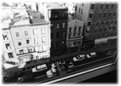

|
ひどく咳きこんでいた。
わずかばかりの気道でヒューヒューと呼吸を試みながら、同時に胸を掻きむしりたくなるほどのきつい咳で追い詰められていた。
身体を動かすことはできない。意識とは関係のないところで断続的に痙攣している。身体がどちらを向いているのか。どちらが縦でどちらが横なのか、それすらもわからない。無重力の中に漂っているようでもあり、ぐるぐると回っているようでもある。胸から下の感覚もない。五秒たったのか、五分たったのかもわからない。目を開けているはずなのに何も見えない。月光も感じられない。
だが、どうやら私は。
生きている。
かすかな話声が漂ってくる。
「サンチョ、逃げるってのはどういうことなんだ」
「おらあ、びっくりしたんだよ」
「まったくこんなにでっかい図体でゴンボ石のようにいきなり転がるもんだから」
「砂嵐はすべてを埋めてしまうよ」
おそらくは部屋の隅からであろう。ネズミたちの声が漏れてくる。彼らは私が床に転がった時の音に驚いて水道管から飛び下りてしまったのだろう。私にできることはただひとつ、穴に落ちそうになったり這い上がりそうになったりする混濁した意識の中で、彼らの声にしがみつこうとすることだけだ。
「タカハシさん・・・死んじまったのかな」
「死んじまったのかな。ごらん、月がふくらんでる。静かの海が盛り上がっている」
「静かの海だ」
「静かの海だ」
「砂嵐が来るよ」
「タカハシさん・・・」
自分の口から、生きている、と伝えたかった。それを言わねば、という気もした。自ら選んで死の淵に向かい、見たこともないネズミたちによってそれを阻止され床に転がっていることの不思議。しかしその意味を考えている余裕はなかった。彼らが余計なことをしてくれたという感覚もなかった。まだ生きている、という事実だけが私の内部で際限なく広がろうとしていた。それを言わねば。
「タカハシさん・・・」
その声に答えようとして、湯気ほどのかすかな力が胸の中に湧き上がってきた。ゆっくりと、ぼんやりと視界も戻ってくる。
窓の向こうに月が見えた。うさぎは相変わらず餅を突いている。私は床の上に仰向けに転がり、顔は天井を向いている。全身の痙攣はまだ続いていて、手足は硬直したまま冷え切っている。ただ、ほんの少しだけ口の奥が自由になった。咳きこんだことで咽に詰まっていた血が吹き飛んだのだろうか。突き出していた舌も付け根の部分に自由が戻り始めている。
小さなブルーのネズミが天井の水道管から真直ぐに落ちてきた。直接私のあごのところに降り立った。後ろ足で立ち上がった彼は差しこむ月光の中でマリンブルーの石のようにお洒落だった。でも尻尾は毛が生えていないせいか、どこにでもいるネズミのそれだった。
「やいアミーゴ、首のロープも切ってやんないと」
青ネズミは私のあごの上で立ち上がると、赤いリュックサックのようなものを背中から降ろし、部屋の隅に向かって偉そうに叫んだ。どよどよとざわめく声がして、何匹かのネズミが私の顔や胸に近付いてくるのがわかった。頭を左右に振れないために彼らをしっかりと見ることはできなかったが、黄緑や朱色のネズミを含めておそらく十匹以上はいそうな気配だった。
青ネズミが後ろ足で立ったまま、私の顔を覗きこんでいる。やっとまばたきができるようになった目で、私も彼の顔をまじまじと見る。
「でかい目玉だ。ブルックリン鳩の卵よりずっとでかい」
「ブルックリン鳩はホヘヘホヘヘと鳴くんだ」
「ブルックリン鳩はホヘヘホヘヘと鳴くのかい？」
トントントンと小さな足踏みの感触が胸に走って、例の黄緑のネズミと朱色のネズミが青ネズミの横に現われた。黄緑の背丈は青ネズミの倍はある。彼らもまた小さなリュックサックを背負っている。青ネズミは鳩の真似をしているのだろうか、朱色と二匹で私の顔を覗きこんだまま、ホヘヘホヘヘと繰り返し奇妙な声で鳴いてみせた。
「さっきの虹石は火が消えちゃったんだよ。新しい虹石でやろう」
黄緑ネズミはそう言いながらリュックサックを私のあごの上に降ろし、中から水晶のかけらのようなものを取り出した。見覚えがある。たぶんこのかけらは、クラッソン・アベニュー・ステーションの階段のところに散乱していたあの水晶だ。あの時、かけらのすべてに小さな火がちりちり灯っていた。私はてっきりそれを、レンガ色の粉を飲んでしまったために現われた幻覚だと思いこんでいた。
黄緑ネズミの前脚にはさまれた水晶のかけらの中でちちちっと火が燃え始めた。青ネズミの前脚でも小さな火が灯っている。青ネズミは水晶から少し顔をそむけ、しかめっ面をしながら私の首のロープにそれをあてがっている。黄緑ネズミは水晶に向かって何度か息を吹きかけ、火を大きくしてから首のロープの上に跨がった。
胸の上でも数匹のネズミが話す声と、トントントンと行ったり来たりする感触が伝わってくる。きっと、両手を縛り付けたロープを焼こうとしてくれているのだろう。お灸をされているようなほんのりとする暖かさが、首や腕のいたるところで感じられた。煙が漂い始め、私はそこで初めて、小さな彼らも咳きこんでいることに気がついた。
「あ、りが、とう」
かすれた声しか出てこない。
途端に両目の端から潤んだものがこぼれ落ちた。
助けられて良かったのかどうか、それは本当にわからなかった。だが、頬を濡らすものは次から次へとあふれてくる。
あれだけ多くのアクシデントに見舞われ、不運に翻弄され、すべてを失ったというのに、私はここ数年泣いたことがなかった。子供の頃から人に泣き顔を見せるのが苦手だった。特に自分の痛みや悲しみでは涙をこぼさないように気をつけてきた。ただ他人や犬や猫がひどい目に合っていると、すぐに我慢ができなくなって涙腺がゆるんだ。そういう時は困った。どこで泣いたらいいのかわからなくて困った。それなのに私は今、ネズミたちに囲まれながら、耳や頬に向かって落ちていく水滴を止めることができなかった。
「タカハシさん・・・砂嵐の前に自由になるんだ」
「ほんとに、ありが、とう」
ひからびた声でもう一度礼を言う。
「ホヘヘホヘヘ。心配しているよ、あれ」
青ネズミは前歯をむき出しながらそう鳴いて、ほら、と窓ガラスを指差した。
ぽっかりと月が浮かぶ澄んだ空。
よく目をこらして見れば、その夜空と私の部屋の間に幾つかの命があった。彼らは窓ガラスにしがみついていた。レンガ色の粉を飲んだせいで幻覚を見たと思っていたのに・・・ネズミと水晶と、そう、朦朧としていた私が一番最初に出会った奇妙な存在。
窓ガラスには大人の手の平よりももっと大きな蛾が十羽ほど張りついていた。どこから見ても完璧な蛾である。その顔が人間の目鼻立ちとまったく同じであることを除けば。
悲しそうな目で彼らはこちらを見ていた。そしてどの目からも、若葉にたまった水滴ほどの細かな涙がちらりちらりと落ち続けているのだった。そのリズムは、私の目からあふれ出る水滴のそれとまったく同じだった。
一羽の蛾人間が頭を左右にゆすりながら、ガラスに向かって何かをささやき始めた。ガラスが閉まっているために、おそらくは床に針が落ちた程度の音であろう彼のささやきは聞き取れるはずがない。しかし私には、彼が何かを伝えようとしているのだ、ということだけははっきりとわかった。しかもその蛾人間の顔は、小学六年生の時の担任であった佐藤先生にそっくりだった。広い額に縮れた髪の毛。温厚そうな眼差しに筋の通った鼻。佐藤先生は私たちの卒業式の十日前に急性膵炎（すいえん）になり、四十八歳の若さで逝ったのだった。クラスのみんなは先生の訃報を聞いた時、机に突っ伏して大声で泣いた。何人かの生徒は城ケ崎の坂道を全力で走り下り、波が砕ける海岸まで行って、やはりそこでしゃくり上げるように泣いた。私は泣かなかった。家に帰るまで泣かなかった。担任が死んだことを告げると、母は学校に向かって慌てて飛び出していった。私はどうしたらいいのかわからなくなり、父が補修用に網を干している八幡野漁港の番屋まで歩いて行き、その網の下に隠れて声を出さずに泣いた。
そこまで思い出したところで、私の身体にある種の感慨が走った。呼吸がもう一度詰まったような衝撃があった。
佐藤先生にそっくりな蛾人間の顔。
伊豆高原の雑木林。大室山の緑。蝉の声。
遠足で出かけたシャボテン公園。
あの時、弁当を食べながら、先生が言った言葉。
「さとう、せんせい？」
ネズミたちがロープを焼き切ろうとしている口元で、唇だけ動かしてみた。
窓ガラスの蛾人間の顔がかすかにふくらんだ。
「まさか、せんせい？」
「まさか、せんせい？ ヘホホヘホホ」
「まさか、せんせい？ ヘホホヘホホ」
「まさか、せんせい？ ヘホホヘホホ」
ネズミたちが輪唱のように騒ぎ出す。私は蛾人間をじっと見る。蛾はどこまでも佐藤先生と同じ顔をしながら、私に何かを伝えようとしている。
「ヘホホヘホホ、砂嵐は冒険の始まりだ」
胸の上で一匹のネズミが踊り上がり、首に食いこんでいたロープがツン、とほどけた。同時に手首を縛り付けていたロープも焼き切れたらしく、腕から圧力がなくなった。細胞のひとつひとつ、神経の一本一本に酸素を背負った血液があわてて走りこんでいくのがわかった。だがそれは、私の身体全体にこれまで以上の大きなショックを与えた。生死の境目よりもずっと死に近付いていたあらゆる細胞がもう一度激しく揺り動かされたのだ。生きた血液の逆流は、まるで何十本もの太いカルシウム注射を一度に打ったかのように激しく作用し、血管を強引にかきまぜていくような突然の熱を全身にもたらした。神経が戻った首のまわりには到底堪えることができない痛みがやってきた。ヒッ、というネズミたちの悲鳴が聞こえたような気もしたが、私には彼らをかまってやれる強靱さはなかった。首にまとわりついたロープに指をかけるとそのまま絶叫し、床の上を転がり回った。
身体に起きた衝撃はそれだけではなかった。呼吸が自由にできるようになったはずなのに、ひどい咳きこみが再びやってきた。腹這いになって頭を抱えると、気管にまで入りこんでいた血液が大量の血痰として飛び出した。ネズミたちはよほど驚いたのだろう、宙に飛び上がるほど高くジャンプして四方八方に散っていく。私は転げ回る。何度も咳きこむ。そしてもがきながらロープを身体から取り去ろうと暴れる。
「タカハシさん、空気吸っちゃだめ」
「タカハシさん、空気吸っちゃだめ。ガラガラヘビの尻尾さえあれば」
「タカハシさん、空気吸っちゃだめ。ガラガラヘビの尻尾さえあれば。もしくはステゴラ雲母の粉だよ」
ネズミたちの声が途切れ途切れに絡んでくる。私は床の上でもがき続ける。吐き出した血だまりに指の跡を付け、月光の中でもだえ苦しむ。肺の中で火山が爆発したようだ。胸が何度も震える。息をしているはずなのに火山の爆発は続く。形ばかりの早い呼吸が何度も繰り返され、しかし空気を吸いこんでいるという実感はまったく得られない。それでも私は瀕死の猟犬のように口を開け、何かを飲みこもうとする。
「タカハシさん、空気吸っちゃだめ」
トンッ、と軽い跳躍があって青ネズミが私の口の中に飛びこんできた。もがいていた私は彼を噛み切りそうになったが、それにもまして生きているネズミをくわえてしまったことのショックが大きかった。胸から上のすべての筋肉が一瞬硬直し、私はそのまま気が遠くなる思いで身体を強ばらせ続けた。噛んではいけない。この青ネズミを絶対に噛んではいけない。とうとう窒息するようなことがあっても、命の恩ネズミを噛んではいけない。私はそれだけを念じ続けた。数十秒後、青ネズミは文字通りネズミ花火のように私の口から飛び出すと、部屋の隅に向けて脱兎のごとく走り抜けていった。
「なんと、アミーゴは勇敢だ」
「さすがテオティワカンの勇士だ」
「アミーゴは勇敢だ。タカハシさんの口の中に入った」
「食用ホオズキでも放り投げてやれば良かったんだ」
「アミーゴはそれにしても勇敢だ。タカハシさんの口の中に入ったんだ」
青ネズミを迎え入れたネズミたちの声。
その中でついに静寂はやって来た。何度かの大袈裟な呼吸があり、私はいつの間にかもがき苦しむこともなく床の上で伸びていた。激痛は身体から去り、咳きこむ辛さからも解放されていた。呼吸が戻ったのだ。もちろん首のまわりだけはかなりの怪我をしているようでやわな痛みではなかったが、しかしそれは逆に、納得のいく痛みだった。
私は首を吊った。
ロープを支えていた水道管が折れて半死半生の状態になった。
咽の内部からも出血してほぼ絶望的に窒息してしまった。
そこをふいに現われたネズミたちによって救出され、過呼吸の危機さえも乗り越えた。
そして今、どうやら私は生者の世界にいる。
だから首は痛む。あの世に近いところまで行って帰ってきたのだから、首は当然痛む。生きているのだから痛まないはずがない。
私は生きている。
それで良かったのかどうか。それはわからない。
直前までの決心をどうとらえるべきなのか。それもわからない。
創造主は一度、私に滅びを許したのではなかったのか。
私は死に近付いた時、娘の思い出の横にたたずんでいた。死ぬことへの拒絶感が強烈に湧いてきた。結果的に私は助けられていた。しかしそれは冷酷な物語の中に連れ戻されたことを意味する。それを受けとめることができるのか。あるいはそれが嫌なら、さきほど頬を伝わったものは何だったのか。死を望んでいても、そこから解放されれば安堵はあるのか。ネズミたちに対してなぜ、ありがとうと言ったのか。
そうだ・・・ネズミたちはなぜ、私を助けようとしたのだろう。

月光の青白い淡さの中で私は上半身を起き上がらせ、ネズミたちを目で追った。部屋の隅に散っていた彼らは後ろ足でプレーリードッグのように立ち上がるとしばらく私の顔を見つめ、そのまま一目散にドアに向けて駆け出していった。中には先を急ぐあまり団子状にもつれ合い、転倒したスケート選手のように床を滑っていくネズミたちもいた。
「おい、待ってくれ」
我先に逃げようとするネズミたちに向けて私は手を延ばした。だが、その動きは余計に彼らを刺激してしまったようだった。もはやブルックリン鳩の鳴き声を真似する余裕もなく、彼らは私から急速に遠ざかろうとしていた。
ドアの端が欠けて、通路との間にネズミ一匹なら楽々通れるぐらいの穴が開いているところがあった。彼らはきっとあそこから入りこみ、そして今あそこからどこかへ去ろうとしているのだ。でも、なぜ？
「おい、待ってくれ」
私は立ち上がった。ぬらりとした影が部屋の中で延び切る。その影におびえるかのように、逃げ遅れていた数匹のネズミが円を描いて走り回る。
「待ってくれ。どうして助けた？」
しかしネズミたちは私の気持ちを知ってか知らずか、ますます興奮したようにグルグルと駆け回り、そこから一匹ずつが猛烈な勢いでドアの穴へ突進していく。
「どうして？」
これまでとは打って変わった彼らの無言ぶり、その慌てかたに不可解を感じた時、窓の外の、それほど遠くはない闇の中からゴワゴワと怪しい音が響き始めた。一斉に幾つもの紫ホラ貝を鳴らすような太い音だ。消防署のサイレンだろうか。しかしまだ夜は明けていない。月は煌々と照っていて、闇は闇としてそこにある。それでも音は連続的にゴワゴワと伝わってくる。
床の上にたった一匹のネズミが残っていた。背筋を延ばして立ち上がっている。彼だけは逃げなかった。ネズミたちのリーダー格だったあの体格のいい黄緑のネズミだ。ブラックビーンズの靴をはき、赤いリュックサックを背負って私を見つめている。
「やあ、君か」
黄緑ネズミは鼻をひくひくさせている。
「助けてくれてありがとう。でも、どうして私を助けてくれたんだい？」
ホラ貝に似たゴワゴワ音は断続的に伝わってくる。音は先ほどよりも少し大きくなったようで、これ以上ゴワゴワゴワゴワ太く荒くなるようなことがあれば、それは低気圧が通り過ぎる時の城ケ崎海岸に匹敵するかもしれないと思われた。イガイガ根も吊り橋も恐ろしい響きを立ててシケに立ち向かった。山のような高波が砕ける剛音は、伊豆高原の別荘地を歩いていても地響きのように重なり合って聞こえてきた。しかしここはブルックリンなのだ。コニーアイランドの沖合で風が吹いたとしても、地下鉄の駅二十もの距離を乗り越えてシケが伝わってくるなんて考えられない。
黄緑ネズミは私の顔と窓の外を交互に覗き見ている。そしていきなりぶっきらぼうに、例のかん高い声でしゃべり始めた。
「ボクはマルセロっていうんだ。ボクはマルセロっていうんだ。ボクはマルセロっていうんだ。でもそれはスペイン語だ。スペイン語はスペインの言葉だ。だからボクはボクの本当の名前を知らない。でもボクはマルセロっていうんだ」
「やあ、マルセロ。初めまして・・・じゃないな。駅の階段のところで会ってるよね、マルセロ」
「でもそれはスペイン語だ。スペイン語はスペインの言葉だ。だからボクはボクの本当の名前を知らない。でもボクはマルセロっていうんだ」
「ふーん、マルセロ。君はどうして人間の言葉をしゃべれるんだ？」
「人間の言葉はスペイン語だ。僕の名前だってスペイン語だ。スペイン語はスペインの言葉だ。だからボクはボクの本当の名前を知らない。でもボクはマルセロっていうんだ」
マルセロがのんびりと自己紹介をしている間にも、ゴワゴワゴワゴワ音はもっともっと太く荒く激しくなった。加えてその音の正体はついに台風なみの風圧を発揮し始めたらしい。背後で窓ガラスがガタガタ震えるようになった。音そのものも変わってきた。もはやゴワゴワゴワゴワではなく、ゴンドロワーンドンゴロワーンゴンドロワーンという脅迫的な力強さである。いったい窓の外で何が起きているのか。かなり気になったが、目の前でマルセロという黄緑ネズミが自己紹介を始めたのだからこれはこれで相当に気になる。私はネズミからきちんと挨拶をされるのはこれが生まれて初めての体験なのだ。
「マルセロ。お礼を言うべきなんだろうな。助けてもらったことの」
窓の外から差し込んでいた青白い月光が急に暗くなった。ゴンドロワーンドンゴロワーンゴンドロワーンという暴れ音はもっともっと強大かつ巨大になったようで、あたりの色々なものを巻きこんで荒れ狂っているような迫力があった。おそらくそれは桁外れに粗暴になり、恨みの固まりの戦車軍団のようになって二拍子で行進してくるのであろう。どこかすぐそば、たとえば階下のデカブ・アベニューあたりまで何かとても邪悪なエネルギーが近付いているような切迫感があった。さすがに私はマルセロから目を離し、窓の外を仰ぎ見た。
湿り気のある光を与えてくれていた真ん丸な月はもうそこにはなかった。
目の前にあるのは闇の中で踊り、ふくれ、渦巻く暗黒の巨大な球体である。直径百メートルほどの黒い固まりが窓の外で暴れ回り、ザッザッザッザッザッと四方に何かをまき散らしている。私は思わず二歩、三歩と窓から後ずさってしまった。
「・・・マルセロ、あれ、なんだ？」
「それはスペイン語だ。スペイン語はスペインの言葉だ。だからボクはボクの本当の名前を知らない。でもボクはマルセロっていうんだ」
「それはわかった。あの窓の外のすごいものはいったい？」
そこまで言ったところで、私は突然冷水を浴びせられたような気持ちになった。月光が消えてしまったせいで、窓ガラスにそれがまだ張りついている、ということが見えにくくなっていたのだ。しかし私には確認できた。窓ガラスにしがみ付いているかすかな輪郭。暗黒球体がまき散らす暴力的なザッザッザッザッザッに耐えながら、懸命にガラスに張りついている。
ひどく切なそうな表情で私に何かを伝えようとしていた佐藤先生。彼はもしかしたらただの蛾かもしれない。でもただの蛾であったのなら、ぐいぐい近付いてくるあれほど無気味な球体からなぜ逃げだそうとしないのだろう。やはりあの奇妙な蛾は、佐藤先生の生まれ変わりではないのか。他にもたくさんの蛾人間がいた。あれらすべては私の命と遠いところでつながる不可思議な現象なのかもしれない。
そこまで瞬間的に考え、私は窓辺に駆け寄った。
暗黒球体は猛烈な勢いで回転し、横転し、吹き荒れ、パンチし、キックし、すべてを巻きこみながら暴れまくっている。同時に球体の中からは巨大な手のようなものが現われ、ザッザッザッザッザッと周囲に何かを投げつけている。それが私の部屋の窓ガラスにも激しく無数に当たり、佐藤先生の蛾人間はもはや落下寸前だった。
私は窓ガラスに指をかける。
「タカハシさん、窓を開けると入ってくるよ」
マルセロが後ろでかん高く叫ぶ。
「何が、ありゃ何だいったい」
私もかん高い声になって叫び返す。
「マルセロ知ってる。あれは憂鬱の砂嵐。憂鬱の砂を投げつけているんだ。あれは窓を開けると入ってくるよ。タカハシさんが窓を開けるかもしれないと思って、みんな逃げていったよ。あれは憂鬱の砂嵐。あれは窓を開けると入ってくるよ。そうすると大変な後悔をすることになるよ。深い悲しみがやってくる。マルセロ知ってる」
指が止まった。だが目の前で、佐藤先生の蛾人間は終わりが近づいていた。投げつけられた憂鬱の砂で羽がぼろぼろに千切れ、少しずつ窓ガラスを滑り落ちていく。
「マルセロ知ってる。あれは憂鬱の砂嵐。死ぬほど憂鬱な砂を投げているんだ。あれは窓を開けると入ってくるよ。みんなそれが恐かった」
蛾人間の顔、つまり佐藤先生の顔にもたくさんの砂が当たっていた。先生の目は腫れ上がり、もはや何をとらえようとしているのかもわからない。先生はずりずりと落ちていく。
大室山の緑。海までの坂道。漁船の音。
いっぱい本を読め。音楽を楽しめ。毎日を鮮やかに生きろ。
困った時は一番最初に金のことを忘れちゃえ。
佐藤先生、そんなこと言ってたっけ。
四十八歳で死んじゃって。
みんな、悲しかったんだよ。
先生、シャボテン公園で弁当食べる時・・・
ザッザッザッザッザッザッとまたもやしつこい砂つぶてが降りかかる。あともう一度だけ強い風が吹けば、先生は完全に窓ガラスから落ち、闇の中へ吸いこまれていきそうだった。私は先生をもう一度失うのだろうか。
手は勝手に伸びていた。
「ダメだよ、タカハシさん。入ってくる」
マルセロの声を背後で受け止めながらも、私は窓を思いきりこじ開けていた。横に三十センチほどスライドした窓と壁の間から、身体が浮かび上がるぐらい強い突風が吹きこんでくる。その風にまぎれていた砂も直接私の顔や胸に当たり、目を開けていることができなかった。しかし私は右手を外に出すと落下寸前の佐藤先生を摘まみ上げ、瞬間的に部屋の中に放りこんでいた。
ビュッといやらしい音がして、デカブ・アベニューの上で渦巻いている暗黒球体から細長い腕のようなものが伸びてきた。数十メートルはある。それが一瞬で近づいてきた。クレーンのように細く、強く、ゴムのようにしなやかな腕だ。指が五、六本ついている。その指は今開けたばかりの窓の端を外側から握り、さらにこじ開けようとしている。
「ああ、マルセロこわい。やっぱり入ってくる」
黄緑ネズミの悲鳴があがる。私もあまりのことに身体が強ばる。しかしこれが本当に憂鬱の砂嵐という化け物なら、これ以上の侵入を許すわけにはいかない。この黒い手を排除して窓を閉めなければ、マルセロが警告した通りひどいことに巻きこまれそうな予感があった。私は窓をこじ開けようとしている黒い指を思いきり拳固で殴りつけた。ジャッ、と音がして窓辺に砂が散らばる。だが指がなくなったところからまた指は生えてきて、力強く窓の端をつかみにかかるのだった。
ビュッ、ビュッ、ビュッ、と続けざまに不快な音がして、球体から何本もの腕が爆発したように伸びてきた。腕の先にはやはり指があり、おいでおいででもするかのようにクネクネ動きながら中空に留まっている。そして一瞬後、それらの指は私が懸命に閉めようとしている窓ガラスの端にかけられていた。ものすごい力だ。どうあがいても球体の黒い腕にはかなわない。両腕をかけて踏ん張っても窓は数ミリずつ開けられていく。
ザッザッザッザッザッザッザッ。
砂が入り込んでくる。
ビュッ、ビュッ、ビュッ。またいやな音がして何本かの腕がにょろにょろ飛び出してきた。宙でカーブを描きながら窓ガラスに向かってくる。砂の爆弾でもぶつけられたかのように窓辺で大量の砂が砕け、私はそれを頭からかぶった。ジャッ、ジャッ、ジャッという砂がまき散らされる音はいたるところで起こっていて、窓を押さえつけながらもマルセロの方を振り返れば、そこにはさらに異様なものがあった。
すでに憂鬱の砂嵐は部屋の中に入りこんでいたのだ。
窓と壁の間から一本の黒い腕が侵入していた。その腕は部屋の真ん中のあたりでふくれあがった男の顔になり、大口を開けて噴水のように砂をまき散らしていた。もはや部屋の中央には砂が五十センチほどの高さで積もっている。砂はそこから増殖し、崩れるように四方八方に広がりつつあった。マルセロはそれを避けようと不規則なジャンプを繰り返していた。
「マルセロ！ 蛾は？ 佐藤先生はどこだ！」
「マルセロ知ってる。遠いところにいる」
「何だって！ さっきの、人間の顔をした蛾だよ」
「マルセロ知ってる。もうここにはいない」
ドーンと爆発的な音とともに、数本の腕が部屋の中に入りこんできた。腕の先は瞬時に腫れ上がった男女の顔に変わり、消火ホースから吹き出す水のように激しく砂を噴出させている。あっという間に腰近くまで砂が積もってしまった。もうマルセロも見えない。
「マルセロ！」
私は全身に砂をかぶりながら叫ぶ。
「マルセロ！ 先生！」
「マルセロ知ってる。逃げた方がいい」
地滑りのようにやってくる砂の波の向こうからマルセロのかん高い声が聞こえた。私は窓ガラスのそばから離れ、砂に足を突っこみ、頭からかぶり、砂から一歩ずつ足を引き抜き、黒い腕を殴りつけ、通路に通じるドアの方へと倒れこむようにと進んでいく。
もはや部屋は腰あたりまで砂に覆い尽くされていた。腕は次から次へと入ってきて顔に変わり、新しい砂をまき散らしていく。
「マルセロ！」
マルセロは相変わらず砂の上を飛び跳ねている。私は彼の身体を強引につかむと、そのままドアに体当たりした。ドアは砂の重量ですでに限界がきていたのだろう。通路側にあっけなく倒れると、砂ごと私とマルセロを放り出した。私は転がりながら通路を駆け出す。右手でマルセロをつかんだまま。
ビュッ、ビュッ、ビュッ。
背後でしつこく嫌な音が聞こえ、通路の裸電球に激しく砂つぶてが当たった。憂鬱の砂嵐は通路まで追いかけてくるつもりなのだ。
「マルセロ知ってる。後ろを振り向かないで」
「どこに逃げればいい！」
「マルセロ知ってる。まっすぐ先の突き当たりの右側」
ドーン、ドーンと太い木材で殴られているかのように背中に衝撃がやってくる。黒い腕が顔に変わり、その顔面で私を小突いているのだ。その度に私はよろける。転倒しそうになる。おそらく今転倒してしまうと、その上から砂爆弾をぶつけられてしまうのだろう。しかしマルセロが言うところの、まっすぐ先の突き当たりの右側、とは。
「マルセロ！ それはあれか、まさかゴミを捨てるところか」
「マルセロ知ってる。そこがすべての入り口」
パーンと破裂音がして、数メートル先の裸電球が砕け散った。一気にあたりが暗くなる。黒い腕が先回りして電球を割り始めたのだ。バケツ一杯分ぐらいの砂が飛んできて、私はまたそれを頭からかぶった。
もう逃げ場がない。前方にも、頭上にも、背後にも。憂鬱の砂嵐の腕は私たちを完全に囲んでいた。待ち構えていた。どこかに身を隠すとすれば、たしかにマルセロが言うように通路の突き当たりのダスタシュートだけだ。
背後から強い力で殴られて私は再び転倒しそうになる。また砂をかぶった。部屋の中と同様に通路の上にも砂が積もり始めた。
「マルセロ、行くぞ！」
ダスタシュートまでの数メートルを私は全速力で走り切った。そして鉄製の扉を開け、地下へとつながる垂直の暗がりに頭から飛びこんだ。その瞬間に、ここが七階であることを思い出した。
身体が宙に舞った。落ちていく。何の引っ掛かりもなしに私とマルセロは落ちていく。意識が遠のいた。暗がりの中で、私はさらなる闇へと落ちていった。 （第３回了）
|